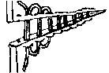
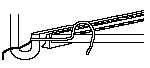

Early medieval shoes were typically made from two pieces, a sole and an upper that wraps around, with joining seams at the outer edge of the sole.
There is sometimes what appears to be an inserted triangular piece, or wedge, placed at some random place in the upper. The reasons for these inserts could be that the shoemaker did not cut out the pattern correctly; the pattern required a piece that would have otherwise overlapped a different piece of the pattern; a repair for a shoe that had stretched out of shape; or that for whatever reason (economy; weakness in a piece of leather, holes, shape of available leather) the shoe must be pieced together from other pieces. Over time, it became more economical to simply piece the shoe out of many pieces, rather than to try it with one.
The side seam joins, and the joins between inserts and the rest of the shoe are, almost universally, sewn with blind round-closed split stitch, the so-called butted "edge-flesh" seams. The butted seams have, although there is some variation, a pitch of about 4-6 per inch (or, coincidentally, spaced about 4-6 mm apart). These seams are generally sewn with threads made from two strands.

On the seam between the sole and the upper the closing is a combination hold comprised of a round closed split stitch on the flesh side of the sole and a lapped stabbed stitch on the upper. After about 1200, this seam is often sewn with a bead welt, often referred to as a "rand", made of a small (about 8 mm wide), usually triangular (skived not compressed), strip of leather stitched between the upper and the sole. These seams have, again with some variation, a pitch of about 4-5 per inch (or spaced about 5-6 mm apart). These seams are generally sewn with threads made from three strands.

Uppers are made from any one of a variety of leathers, such as calf or goat, depending on when and where the shoe was made.
Sole leather is often a matter of taste. Some leather stores will sell what they refer to as "Sole leather" which is highly compressed and generally less than 13-14 Irons thick, or roughly 5/16" (actually 4.5/16", or 9/32"), for American made sole leather, while German and English soling are usually 10.5-11 irons thick (a shade under a 1/4"). While I may be wrong, I could swear I have seen it almost 1/2" thick (24 irons). In any case, it is inappropriate for making the soles of turnshoes because it is not flexible enough to "turn" the shoe. However, it is generally suitable for turn-welt and welted shoes. If it's not easily available to you, you may have to make do. If you have the good fortune of being able to work directly with a tannery, you might be able to ask them to roll a particular hide for you for greater compression. You can buy some from most Tandy or the Leather Warehouse, or you can use regular leather.
As an aside, American soling leather is for the most part no longer a bark tannage (or at least it is not a pure bark), while the German and English soling is still pit-tanned and processed in a bark liquor of varying strengths for as long as 12 months.
I personally prefer to use 2-3 layers of 8-10 oz Hide, glued together, then stiched to the welt, which ought to be sticking out all around the soul. It should be noted though that while layering can be used in repairs, such as clump soles and as pattens, there may be no evidence for a multiple layered soles in "Turn-Welt" shoes.
Some people soak the sole before attaching it, then hammer it flatter and more compressed (often on a lap-stone). Historically, this was at times a common practice, particularly during the 18th and 19th centuries, but it was by no means universal, although there are those who disagree. While it is probably from this treatment that modern compressed sole leather derives, I personally think that this is a waste of time as walking on it will do the same thing with less effort, but that's just me.
Moreover, all commercially available vegetable tanned leather has been to some extent rolled and compressed. Any additional compression through malleting can compromise the quality of the collagen fibers. You will probably achieve better results by using skirting-weight leather and cutting your soles from the 'back' edge of the hide (as opposed to the 'belly' edge), as this is thicker and less flexible.
The easiest way to place a more firm sole on the Turnshoe body is as follows:
Footwear of the Middle Ages - Uppers and Soles, Copyright � 1996. 1999 I.
Marc Carlson.
This page is given for the free exchange of information, provided the author's name is
included in all future revisions, and no money change hands, other than as expressed in
the Copyright Page.